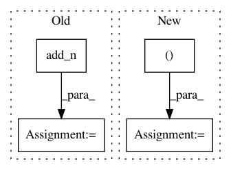

b0fd7d13ff1392c60dfef432bfea7a7dd035f71f,tensorforce/models/vpg_model.py,VPGModel,create_tf_operations,#VPGModel#Any#,39
Before Change
lps_list = [lp for lps in lps_list for lp in tf.unstack(value=lps, axis=1)]
log_probs.extend(lps_list)
log_prob = tf.add_n(inputs=log_probs) / len(log_probs)
self.loss_per_instance = -log_prob * self.reward
loss = tf.reduce_mean(input_tensor=self.loss_per_instance, axis=0)
tf.losses.add_loss(loss)
After Change
log_probs = list()
for name, action in self.action.items():
log_prob = self.distribution[name].log_probability(action=action)
log_prob = tf.reshape(tensor=log_prob, shape=(-1, util.prod(config.actions[name].shape)))
log_probs.append(log_prob)
log_prob = tf.reduce_mean(input_tensor=tf.concat(values=log_probs, axis=1), axis=1)
self.loss_per_instance = -log_prob * self.reward
In pattern: SUPERPATTERN
Frequency: 3
Non-data size: 4
Instances
Project Name: reinforceio/tensorforce
Commit Name: b0fd7d13ff1392c60dfef432bfea7a7dd035f71f
Time: 2017-07-29
Author: aok25@cl.cam.ac.uk
File Name: tensorforce/models/vpg_model.py
Class Name: VPGModel
Method Name: create_tf_operations
Project Name: fgnt/nara_wpe
Commit Name: 4580d28f9cc8f846ee6fb42dda6909a98797fcd9
Time: 2018-05-16
Author: heymann@nt.upb.de
File Name: nara_wpe/tf_wpe.py
Class Name:
Method Name: perform_filter_operation
Project Name: reinforceio/tensorforce
Commit Name: b0fd7d13ff1392c60dfef432bfea7a7dd035f71f
Time: 2017-07-29
Author: aok25@cl.cam.ac.uk
File Name: tensorforce/models/dqfd_model.py
Class Name: DQFDModel
Method Name: create_tf_operations